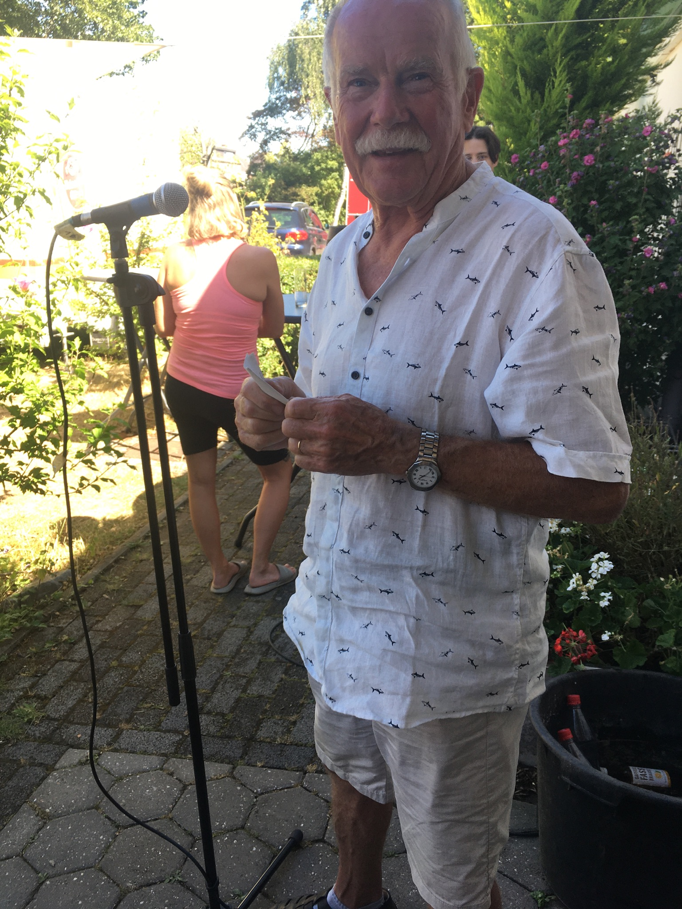
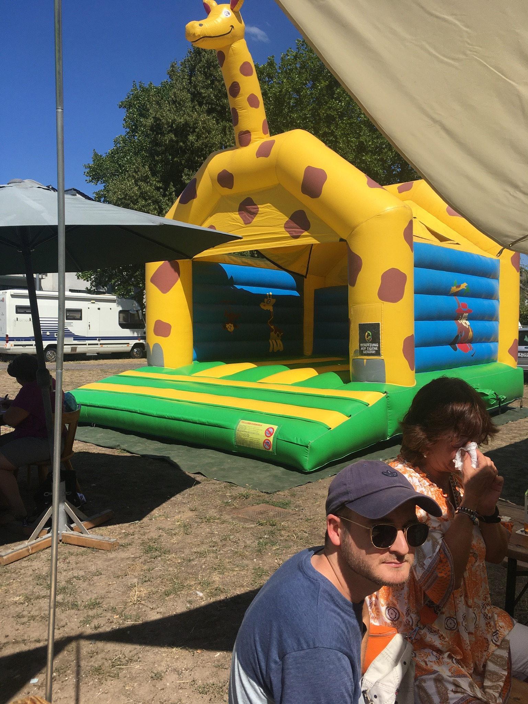
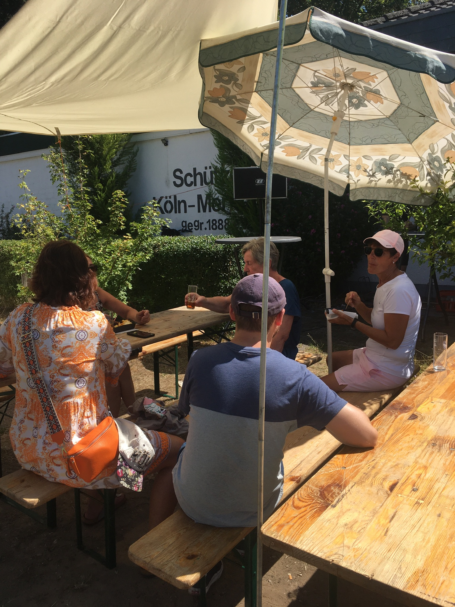
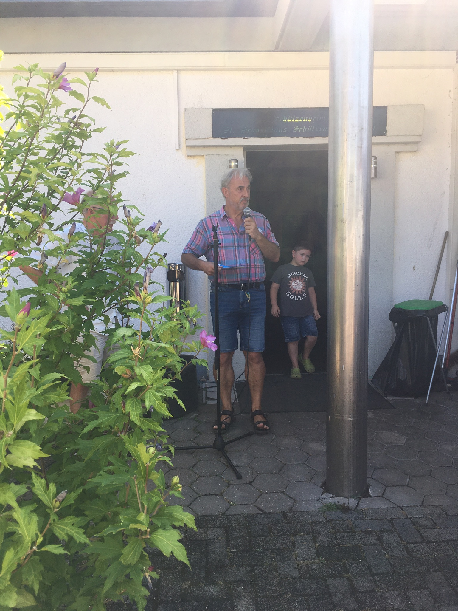
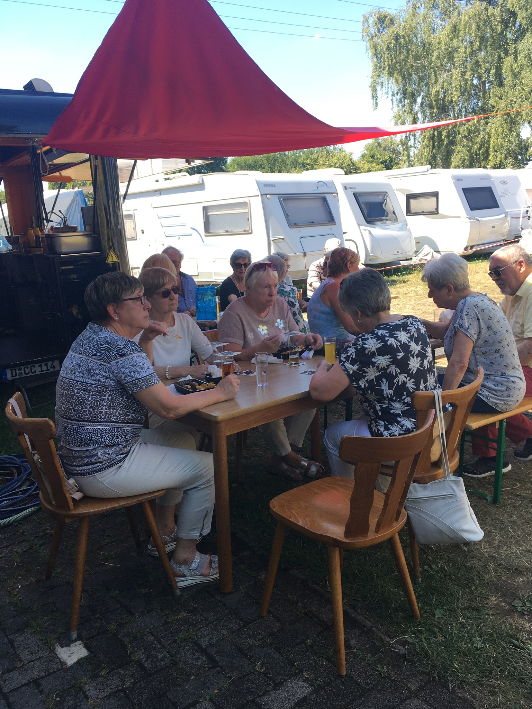
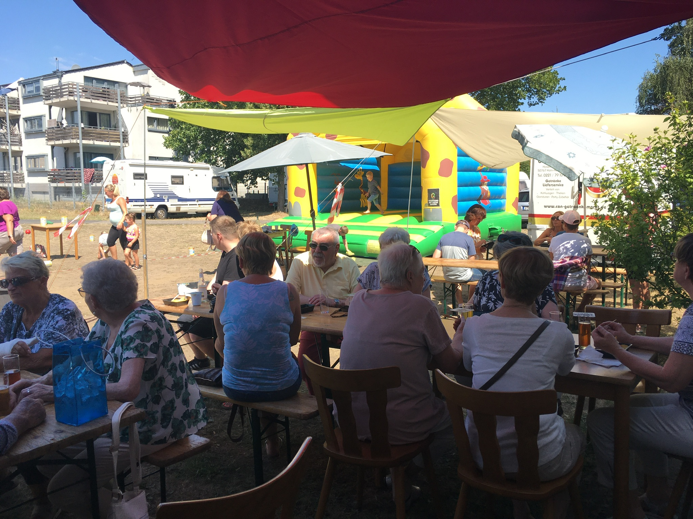
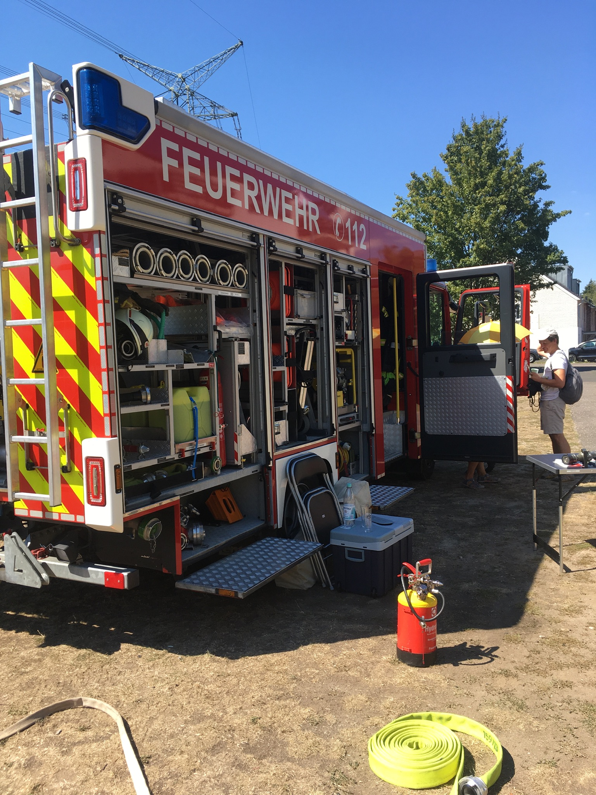
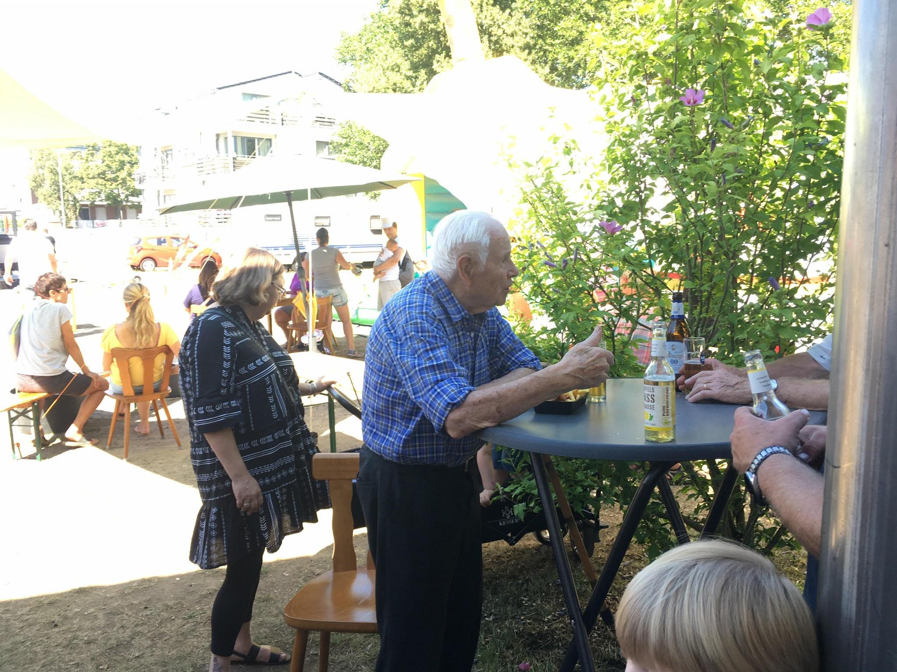
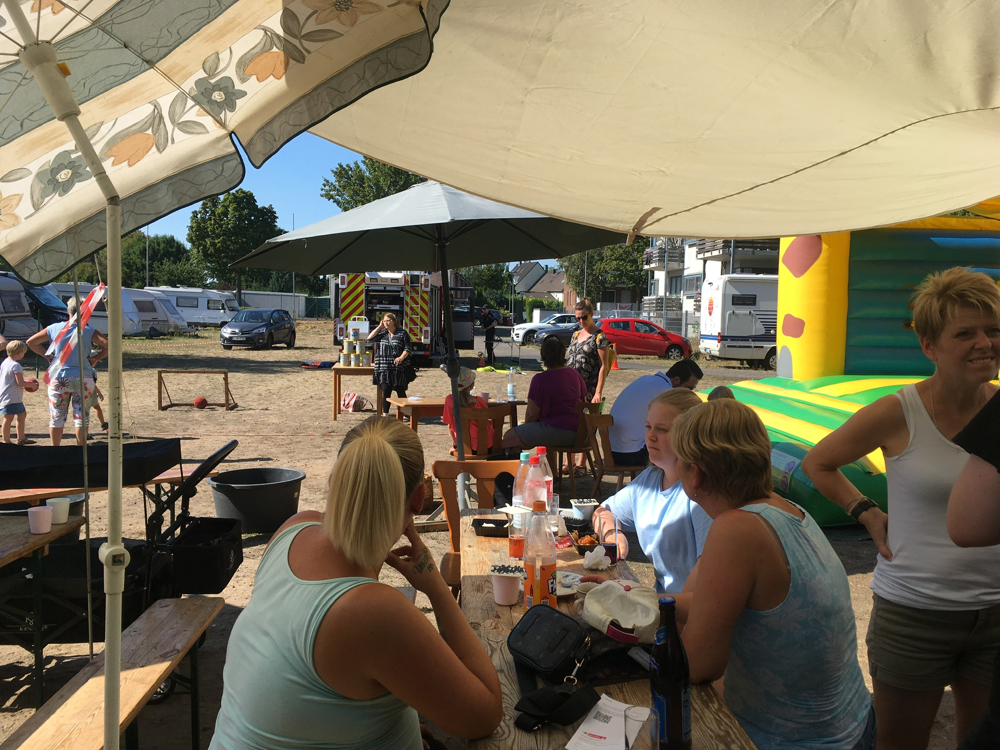
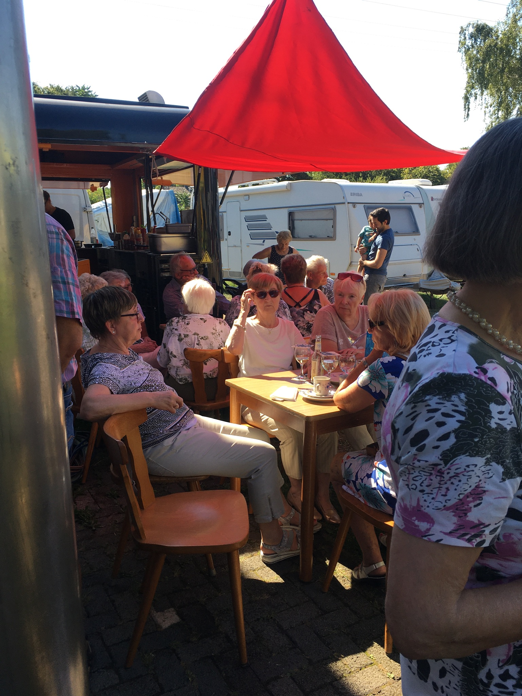

1 / 11

Unser erster Vorsitzender, Hansjörg Schneider, eröffnet das Vereinsfest 2022.
2 / 11

Unsere Hüpfburg wurde durch die hohen Temperaturen leider
wenig genutzt.
3 / 11

Die große Hitze hat auch dazu geführt, dass Familien mit Kindern
am Anfang nicht stark vertreten waren.
4 / 11

Herr Bruno Klais vom Bürgerverein Merkenich folgte unserer
Einladung, bedankte sich für die gemeinsame gute Arbeit und stand den Besuchern
für Fragen zur Verfügung.
5 / 11

Die Mitglieder der Damengymnastik und der Wandersparte waren
reichlich vertreten und genossen das Beisammensein.
6 / 11

Die angebotenen Speisen und Getränke kamen gut an.
7 / 11
Die Merkenicher freiwillige Feuerweher kam mit einem großen Fahrzeug vorbei und gab Interessierten ausführliche Erklärungen.
8 / 11

Der TuS Merkenich bedankt sich herzlichst.
9 / 11

Unsere besonderer Dank gilt Herrn Günther Paffenholz, der
mit seinen stolzen 93 Jahren mit uns gefeiert hat.
10 / 11

Für unsere Kleinsten wurden Spiele angeboten, die trotz
der Hitze gut angenommen wurden.
11 / 11

Bis zum späten Nachmittag wurde auch bei Kaffee und Kuchen fröhlich diskutiert.
❮
❯